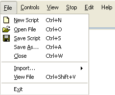
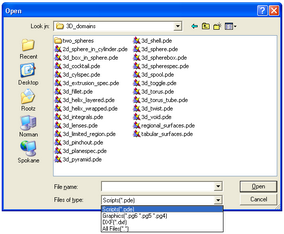

|
The File Menu |

  
|
|
The File Menu |
|
The File Menu allows the creation of new files, opening existing files, saving and closing active problems, importing DXF files and viewing saved graphics:

The menu items have the following functions:
New Script
Use this menu item to create a new problem descriptor file (or "script"). FlexPDE will initialize the descriptor with the most common section headings. In most cases, it will be more convenient to create a new descriptor by editing an existing one which is close in function to the new problem.
Open File
This menu item can be used to open an existing descriptor file (either to modify it or to run the problem), to open a stored graphics file for viewing, or to open a DXF file for import. A standard Open_File dialog will appear. Navigate to the folder which contains the descriptor you wish to open. For example, navigating to the standard samples folder "Samples | Usage | 3D_domains" will display the following screen:

(If your system is configured to hide file extensions, you will not see the ".pde" part of the filenames, but you can still recognize the FlexPDE icon.)
The default display shows script files (.pde extension). You can select other file types using the dropdown "Files of Type" list. (On Macintosh or Linux, the selection of alternate file types is slightly different, but follows the customary methods for the operating system.)
Double-click on the file of your choice, or single-click and click Open. See the following section "Editing Descriptor Files" for the rest of the story.
A new tab will be displayed, showing the name of the selected problem file. You can switch between tabs at will.
You can open as many descriptors as you wish, and any number of them can be running at the same time.
Save Script
Use this menu item to save a descriptor which you have modified. The currently displayed file is saved in place of the original file. This function is automatically activated when a problem is Run.
Save As
Use this menu item to save to a new file name a descriptor which you have modified. The original source file will remain unchanged.
Close
Use this menu item to remove the currently displayed problem and disconnect from the associated files.
Import
Use this menu item to import descriptors from other formats. The only option available at this time is "DXF", which will import a descriptor from AutoCad version R14. See the Technical Note "Importing DXF Files" for more information. (This function is the same as "Open File" with the DXF file type selected.)
View
Use this menu item to open a file of saved graphical output from a FlexPDE problem which was run and completed at an earlier time. A standard Open_File dialog will appear. Navigate the folder containing the desired ".pg6" file. Double-click on the file of your choice, or single-click and click Open. See the following section "Viewing Saved Graphics Files" for more information. You may View more than one saved problem, and you may open files for viewing while other descriptors are open, but you should not open the same problem for simultaneous viewing and running, since file access conflicts may occur. (This function is the same as "Open File" with the "Graphics" file type selected.)
Exit
Click here to terminate your FlexPDE session. All open descriptors and Views will be closed. If changes have been made and not saved, you will be prompted.
Page url: index.html?thefilemenu.html